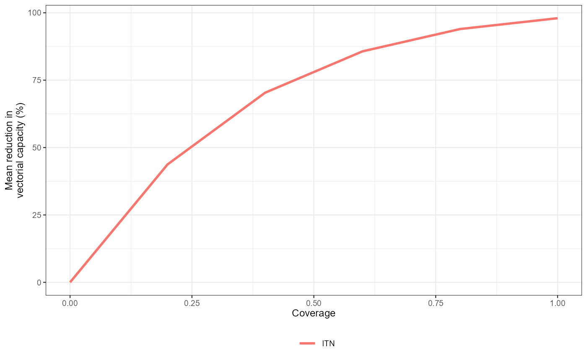

Plots the average reduction in vectorial capacity
(avg_impact) against coverage, one line per intervention, from the
output of calculate_impact or run_interventions.
With uncertainty draws (a draw column), the line is the median over
the draws and the band their 95% interval.
Arguments
- impacts
Output of
calculate_impact()orrun_interventions()(the table, or the list returned withkeep_time = TRUE). Lines are labelled by thenamecolumn (give each intervention a distinct name); without it, by theinterventioncolumn.- title
Optional plot title, e.g. the mosquito species.
Author
Monica Golumbeanu, monica.golumbeanu@swisstph.ch
Olivier Briët, olivier.briet@swisstph.ch
Nakul Chitnis, nakul.chitnis@swisstph.ch
Tom Smith, thomas.smith@swisstph.ch
Examples
model_p = build_model_obj(def_vector_params(), def_host_params())
itn = build_intervention(
efficacy = c(Deterrency = 0.5, PrePrandial = 0.4, PostPrandial = 0.3),
halflife_attrition = 2 * 365, shape_attrition = 2,
duration_years = 1, model_p = model_p, name = "ITN")
#> build_intervention: using standard (3-host) model with PrePrandial.
plot_impact(calculate_impact(itn, seq(0, 1, by = 0.2), model_p))
#> Ignoring unknown labels:
#> • fill : ""
